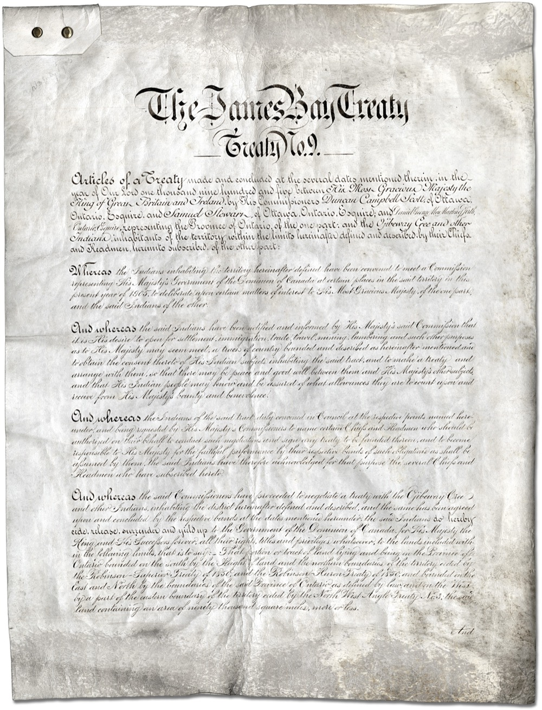
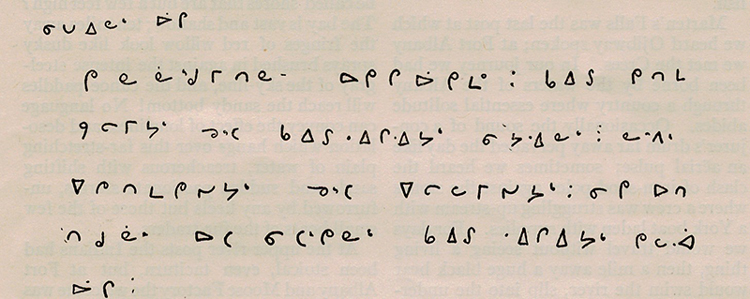

Chief & Council
Kashechewan First Nation is led by an elected Chief and Council. The community was granted its own band council under the Indian Act in 1977.1 Council is responsible for the administration of community programs and services, by-laws, and representing members' interests to the Crown and to partner organizations.
Names, portfolios, and direct contact details are awaiting confirmation from the community. Please contact the Band Office for current leadership information.
Contact informationTreaty 9 — the James Bay Treaty
Kashechewan lies within the territory of Treaty No. 9, also known as the James Bay Treaty, first signed in 1905–1906 between the Crown and the Cree and Ojibway peoples of what is now Northern Ontario.2 Treaty 9 defines the nation-to-nation relationship that continues to shape the community's rights and its dealings with the governments of Canada and Ontario.


Our affiliations
Like many communities of the James Bay lowlands, Kashechewan participates in regional and provincial organizations that carry a collective voice and deliver shared services.
Mushkegowuk Council
A non-profit regional chiefs' council representing Cree First Nations of Northern Ontario, based in Moose Factory. It is made up of a representing chief from each of its member communities and delivers advisory services and programs.3
Nishnawbe Aski Nation (NAN)
A political organization representing 49 First Nations across the Treaty 9 and Treaty 5 areas of Northern Ontario, advocating on behalf of member communities and delivering region-wide services.4
Nishnawbe-Aski Police Service
Community policing across NAN territory, including Kashechewan — one of the largest Indigenous police services in Canada.4
A circle of governance. Decisions affecting Kashechewan are shaped at several levels — the community's own Chief and Council, the regional Mushkegowuk Council, and the province-wide Nishnawbe Aski Nation — all within the framework of Treaty 9.
Sources & citations
- “Kashechewan First Nation.” Wikipedia. en.wikipedia.org/wiki/Kashechewan_First_Nation
- “Treaty 9 First Nations.” Queen's University Library Research Guides. guides.library.queensu.ca/treaty-9/first-nations
- “Mushkegowuk Council.” Wikipedia. en.wikipedia.org/wiki/Mushkegowuk_Council
- “Nishnawbe Aski Nation.” Wikipedia. en.wikipedia.org/wiki/Nishnawbe_Aski_Nation
Membership counts for regional organizations vary slightly between sources and over time; please confirm current figures with Mushkegowuk Council and Nishnawbe Aski Nation directly.